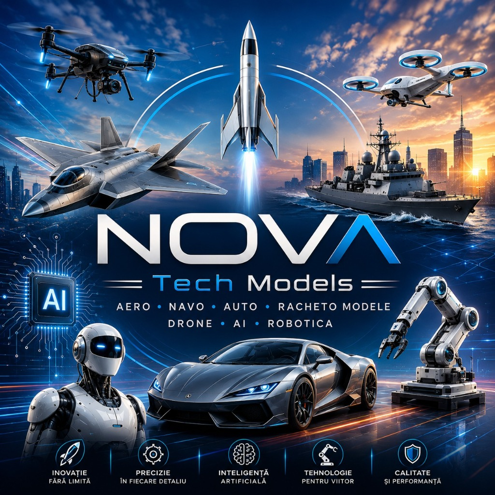
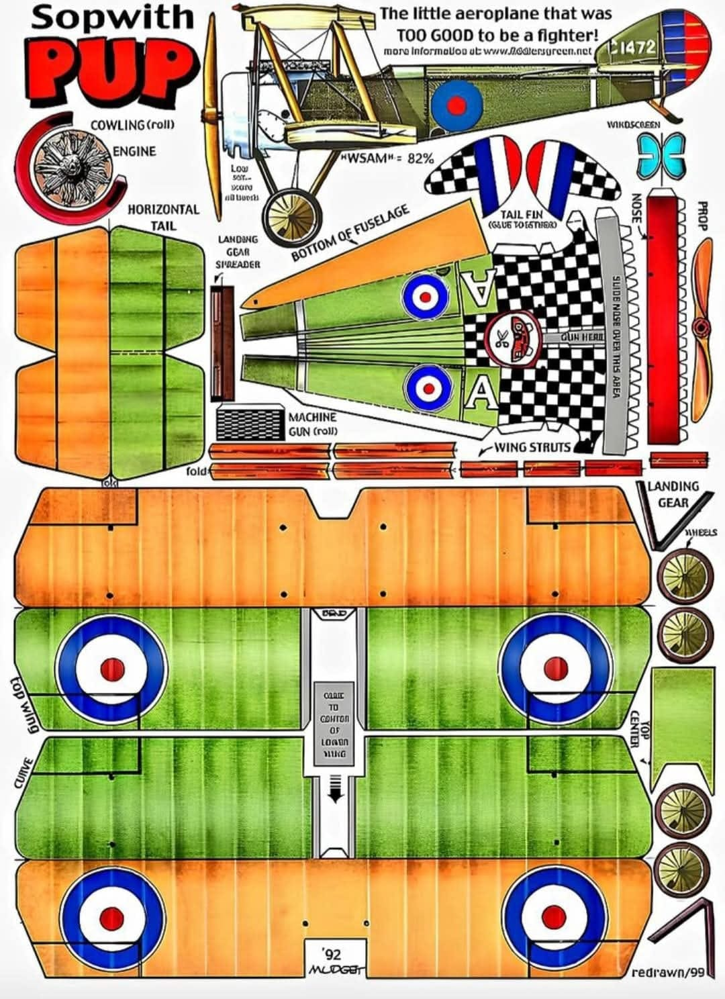
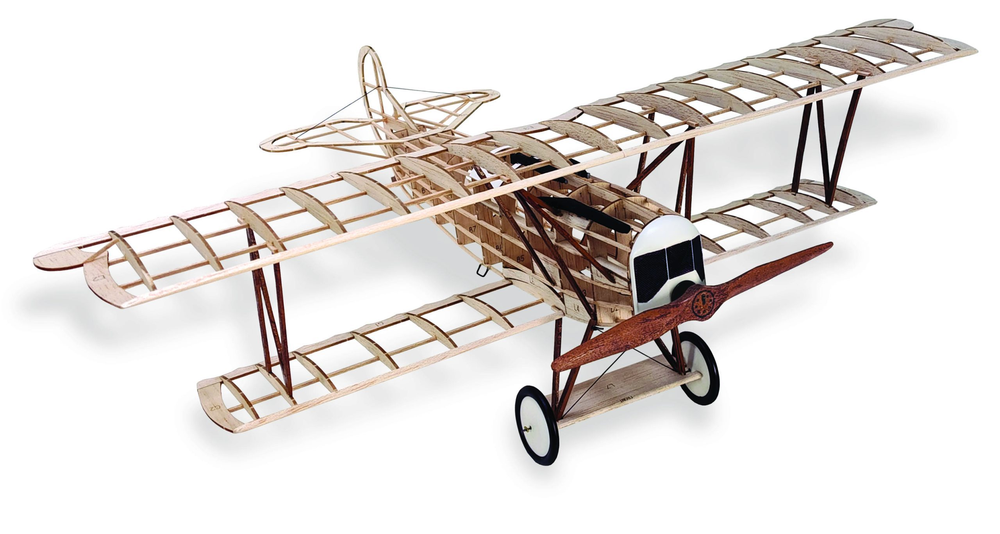
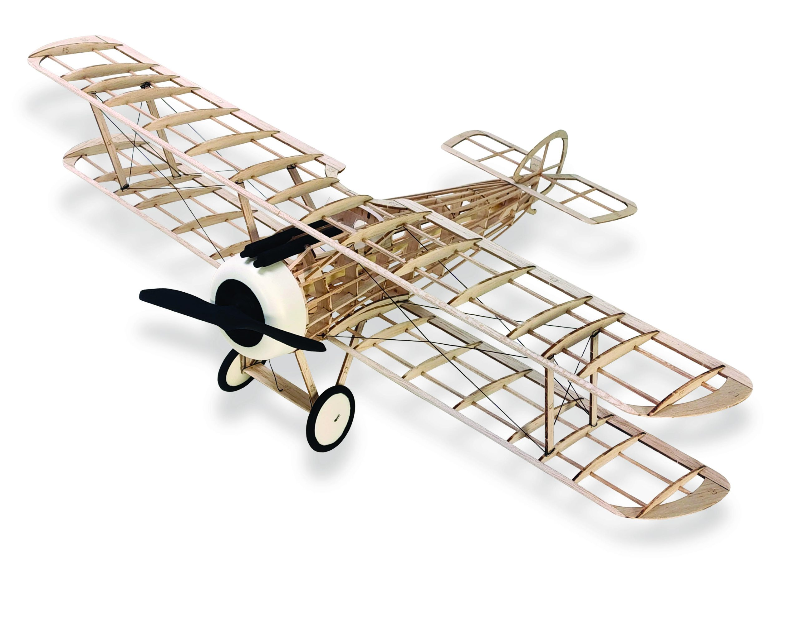
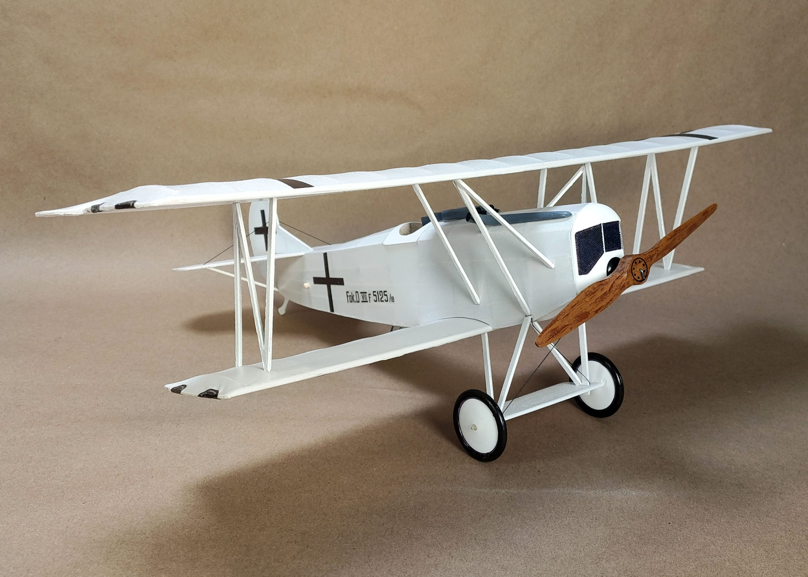
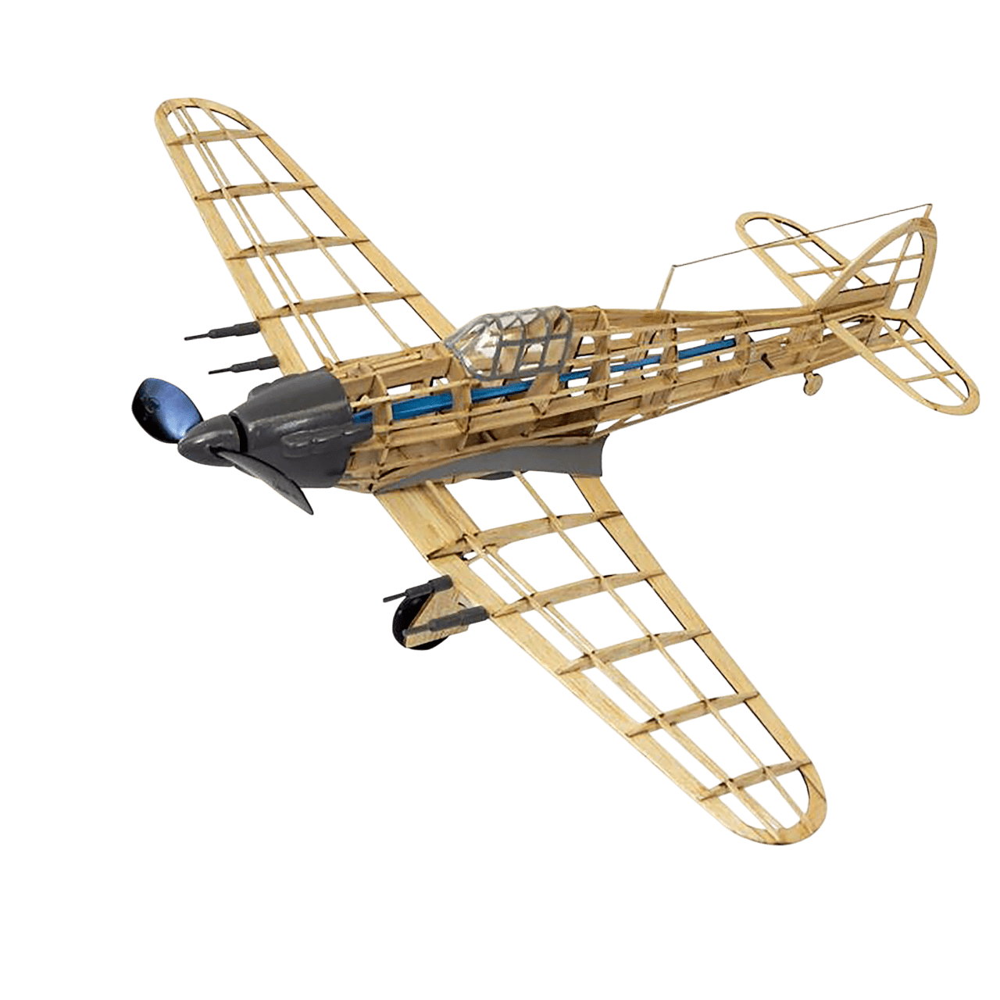
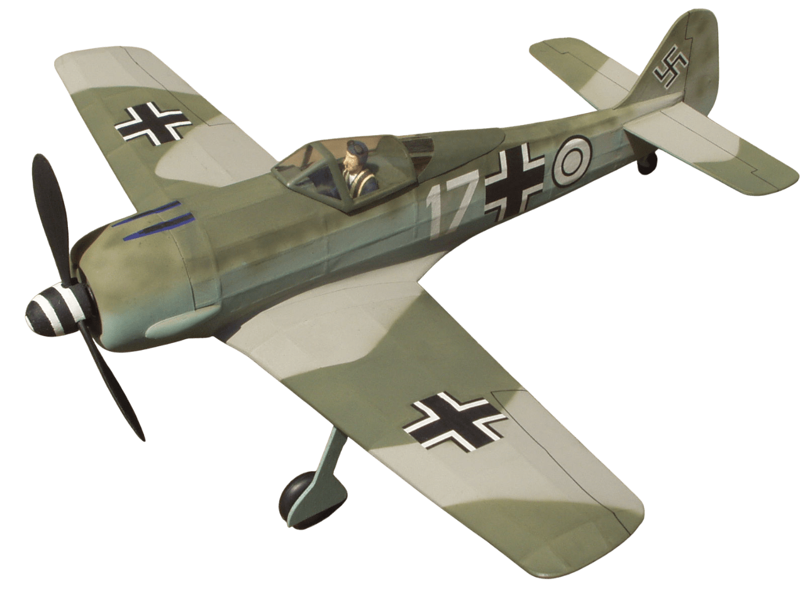

Revoluția Modelismului Tehnologic NOVA 3D
Inginerie aerospațială de precizie micrometrică, compozite din fibră de carbon și telemetrie cu Inteligență Artificială integrată pentru pasionați și profesioniști.

Construit după Standardele Viitorului
Cele 5 principii fundamentale care definesc fiecare model tehnologic din atelierul NOVA.
Inovație fără Limită
Design aerodinamic revoluționar, arhitectură vectorială și geometrii optimizate prin simulări CFD computaționale.
Precizie în Detaliu
Prelucrare CNC la toleranțe de sub 0.05 mm, îmbinări micrometrice și finisaje manuale de nivel expozițional.
Inteligență Artificială
Micro-controlere neurale capabile de stabilizare giroscopică autonomă, evitare obstacole și telemetrie live.
Tehnologie pt. Viitor
Servomotoare magnetice fără perii (Brushless), legături radio criptate pe 2.4GHz/5.8GHz și senzori LiDAR miniaturali.
Calitate & Performanță
Șasiuri din fibră de carbon forjată 3K și elemente structurale din titan aerospațial rezistente la sarcini extreme.
Ecosistemul Tehnologic NOVA 3D
Explorează categoriile noastre de vârf. Filtrează modelele după domeniu tehnologic.
Vânător Supersonic Stealth Mach-4
Model aerian cu geometrie variabilă a aripilor, finisaj compozit absorbant radar și turbină micro-jet capabilă de viteze reale de peste 180 km/h.
Crucișător Stealth Aegis
Corp impermeabilizat din kevlar cu dublă elice contrarotativă și radar activ 360° rotativ.
Hypercar Aerodinamic Carbon
Suspensie activă magnetică push-rod, diferențial blocabil electronic și anvelope compozit semi-slick.
Rachetă Orbitală Treapta 2
Recuperare asistată cu parașută dual-stage, altimetru digital cu telemetrie radio și motor cu combustibil solid certificat.
Hexacopter AI & eVTOL
Navigație autonomă bazată pe recunoaștere vizuală AI, gimbal pe 3 axe cu transmisie video 4K 60fps fără latență.
Robot Umanoid & Braț Industrial 6-Axe
Articulații cu actuatoare armonice de precizie chirurgicală, algoritmi de inverse kinematics și procesor neural integrat pentru comenzi vocale și gestuale.
Capabil să execute traiectorii autonome, calibrare automată a motoarelor și predicție de telemetrie în timp real.
Configurează Modul RoboticPersonalizează-ți Modelul NOVA
Alege categoria, scara, materialele de înaltă tehnologie și opțiunile de asistență AI pentru o estimare instantă.
Avion Supersonic Mach-4 (Aero)
Scară 1:18 • Fibră de Carbon Forjată 3K • Standard • Servo Standard
De la Primul Avion de Hârtie la Inginerie Aerospațială
Ghidul complet al formării modelistului constructor. O structură riguroasă în 4 etape strategice și 12 trepte de competență tehnică, integrând teoria mecanică, calculele aerodinamice și fabricația modernă.
„Atenție: se aplică pentru toate ramurile... aero, navo, racheto... Diferența rezidă doar în obiecte. Cine învață să construiască aeromodele va ști să facă nave, rachete, corăbii, drone și orice structură inginerească.”
Structura Progresivă de Calificare
Modelismul adevărat nu se oprește la carton. Urmează drumul de la primele încercări manuale până la nivelul de expert proiectant internațional.
1. BASIC — Descoperire și Inițiere
Vârsta recomandată: 7–10 ani • Preinițiere și geometrie elementară
Primele Zboruri
- Cunoașterea principalelor tipuri de modele (aero, navo, racheto).
- Reguli elementare de siguranță și utilizarea uneltelor simple.
- Avioane origami și aripi zburătoare din hârtie.
- Decupare, pliere și lipire ghidată de instructor.
- Înțelegerea intuitivă a plutirii în aer.
Modele din Carton
- Miniavioane din carton pretipărit și decupaj de precizie.
- Identificarea fuzelajului, aripii, profundorului și derivei.
- Folosirea corectă a cutterului, riglei metalice și adezivului.
- Păstrarea simetriei la îmbinare.
- Primele lansări manuale și corecții prin îndoirea flapsurilor.
Aeromodele Funcționale
- Structuri funcționale din carton dens cu diedru longitudinal.
- Profilarea simplă a suprafeței portante a aripii.
- Centraj static prin deplasarea aripii sau adăugarea lestului de plumb.
- Reglaje dinamice ale pantei de coborâre.
- Zmee celulare și modele pentru concursuri școlare.
2. MEDIU — Constructor Modelist Autonom
Trecerea la lemn balsa, polistiren, structuri cu nervuri și propulsie elastică
Materiale Modelistice
- Trecerea decisivă de la carton la materiale modelistice reale.
- Planoare cu aripă profilată din polistiren extrudat.
- Primele modele construite integral din lemn de balsa.
- Trasarea și debitarea pieselor fidele după planul tipărit.
- Șlefuirea profilelor și centraj static precis.
Structuri Scheletice
- Planoare structurale Faza I și Faza II cu schelet intern.
- Utilizarea baghetelor de brad/tei, nervurilor și lonjeroanelor.
- Împânzirea aripilor cu hârtie japoneză sau film termocontractibil.
- Controlul incidenței, al diedrului și eliminarea torsiunilor.
- Diagnosticarea cabrajului, picajului și tendințelor de viraj.
Propulsie & Competiții
- Planoare de performanță pentru zbor la pantă.
- Modele echipate cu motor de cauciuc (propulsie elastică).
- Alegerea și echilibrarea elicei, axului și lagărului mecanic.
- Reglarea fazei de urcare motorizată și a tranziției în planare.
- Măsurarea timpului de zbor și participarea la concursuri județene.
3. SPECIALIST — Nivel Avansat & Radiocomandă
Programa „Avansați”: Aerodinamică matematică, chesonare, zbor RC și determalizare
Calcul & Aerodinamică
- Matematică și fizică aplicată în modelismul de performanță.
- Calculul ariei portante, al anvergurii și încărcării alare specifice.
- Interpretarea polarului de viteză și a unghiului critic de atac.
- Construcția planoarelor din clasele sportive F2, A1 și A2.
- Selecția lemnului după densitate și orientarea fibrelor.
Tehnici de Rigidizare
- Alegerea și trasarea profilelor aerodinamice curb-convexe.
- Chesonarea bordului de atac cu furnir de balsa pentru rezistență la torsiune.
- Montajul tuburilor de ghidaj și al baionetelor de duraluminiu/carbon.
- Lăcuire de tensionare, impermeabilizare și finisaj de înaltă clasă.
- Centraj dinamic milimetric pe cumpănă de precizie.
Sisteme RC & Testare
- Sisteme mecanice de determalizare (limitare automată a duratei zborului).
- Reglaje pentru valorificarea curenților termici ascendenți.
- Instalarea servomotoarelor, receptoarelor și sistemelor de radiocomandă 2.4GHz.
- Experimente în tunel aerodinamic și optimizarea trenelor parazite.
- Pilotaj pe simulator și zbor în condiții meteo reale.
4. PROFESIONIST — Performanță, CAD & Proiectare
Programa „Performanță”: Desen tehnic standard, CNC, print 3D, compozite și recorduri
Desen Tehnic & Metrologie
- Desen tehnic industrial standardizat: secțiuni, vederi, cotare și toleranțe.
- Utilizarea instrumentelor de înaltă precizie: șubler digital, micrometru, comparatoare.
- Fizica și rezistența materialelor compozite (rășini epoxidice, fibră de sticlă).
- Control dimensional riguros înainte de asamblarea finală.
- Redactarea cărții tehnice și a breviarului de calcul al modelului.
Fabricație Digitală (CAD/CAM)
- Modelare 3D parametrică CAD a fuzelajelor și structurilor complexe.
- Generare de cod G-Code pentru debitare laser și frezare CNC de mare viteză.
- Printare 3D din polimeri tehnici (PETG, Carbon-Filament, TPU).
- Rachetomodele multistadiu și rachetoplane cu telemetrie radio.
- Integrarea camerelor video HD cu transmisie pe frecvențe digitale.
Campionate & Inovație
- Dezvoltarea de prototipuri complet originale, unicate inginerești.
- Pregătirea echipamentelor pentru campionate naționale, europene și mondiale.
- Telemetrie de bord în timp real (altimetru barometric, GPS, variometru).
- Formarea și mentoratul noilor generații de tineri constructori.
- Elaborarea de manuale tehnice, planuri omologate și truse didactice.
Galeria Scheletelor Structurale
Exemple autentice de asamblare: de la planul cotat al planorului de școală până la structurile din baghete de balsa ale avioanelor legendare din Primul Război Mondial.






Calculator Aerodinamic de Laborator
Verifică instant viabilitatea zborului: calculează încărcarea alară specifică ($g/dm^2$) și intervalul centrului de greutate recomandat de la bordul de atac.
Date Geometrice & Masă
Trage de cursoare pentru a simula parametrii aeromodelului tău (de la mic planor de cameră până la aeromodel mare RC):
Biblioteca de Cursuri Florin G. Ursa
Tratatele complete de teorie, laborator tehnologic și performanță elaborate pentru palatele și cluburile de copii și tineret (PCTGM).
Aeromodele — Începători
Manualul esențial pentru debutanți: clasificare, scule de atelier, securitatea muncii, construcția modelelor din hârtie, carton și primele încercări din polistiren și balsa.
Aeromodele — Avansați
Aprofundare teoretică: aerodinamică aplicată, calcule de încărcare, chesonarea aripilor, tehnici de lăcuire de rezistență, zbor la pantă, termică și sisteme mecanice de determalizare.
Aeromodele — Performanță
Lucrarea monumentală de inginerie: desen tehnic industrial, toleranțe micrometrice, proiectare CAD, printare 3D, compozite din fibră de carbon, telemetrie și pregătire pentru campionate mondiale.
Arhiva Completă de Planuri, Cursuri & Scheme Tehnice
Pentru protejarea materialelor didactice și a desenelor cotate, accesul la dosarul oficial Google Drive (1000+ pagini tratate Florin G. Ursa & planșe de atelier) se acordă gratuit la cerere, pe bază de autorizare nominală.
Fii Următorul Campion sau Proiectant Inovator
Indiferent dacă ești la primul tău avion din carton sau proiectezi deja piese în CAD pentru drone și rachete, atelierul nostru oferă cadrul tehnic complet.
Dă Viață Proiectului Tău
Completează formularul pentru a primi specificațiile detaliate, planul de asamblare și termenul de livrare de la inginerii NOVA.